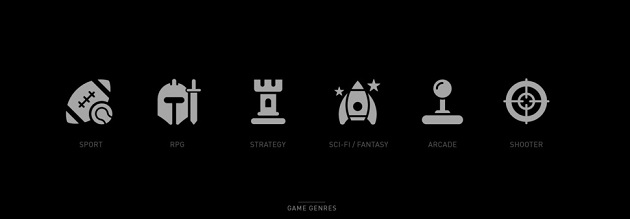

Video games
Consoles, genres, ratings and sales - Video game information from the current generation
Video games, often regarded as the eighth piece of Art, is one of the most common form of entertainment around the world. Statistics showed that with the advancement of technology, combined with creativity of game makers, games are often sought out and in turn, affect the sales of the video games consoles around the world .
With the inclusion of various consoles, there are a plethora of gaming platforms where people can access and play. Having evolved through different generations, the decade of the years 2010 to 2020 marks the eight generation where consoles are released, with various new and unique features and each.
Thus, this site will focus on exploring the pattern between game releases and ratings with the sales of video games console around the world between the years 2008 to 2018, also known as the 8th generation of console video games.
Genres - ratings and sales
Video game ratings can be one of the main determinants if the video game is worthwhile or not. This section explores the correlation between genre, sales and ratings
Popular genres
Each country has a most popular genre, which can answer video game and console sales across the world. This section explores each countrie's favorite game genre.
Console sales
How has console sales change over time? What are the popular consoles in the past 10 years? This section aims to answer these questions.
Video game sales & console sales
Is there a correlation between video game and console sales? We will explore this by looking into recent data to answer this question.